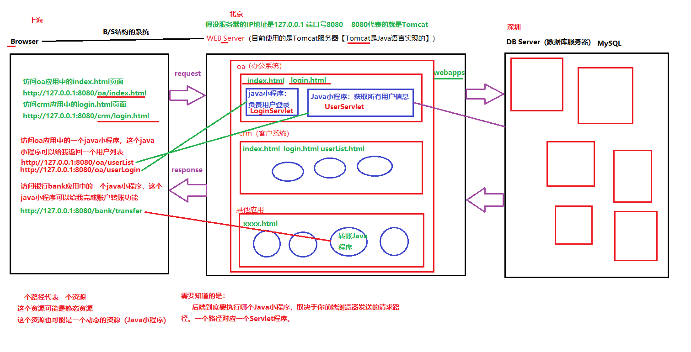
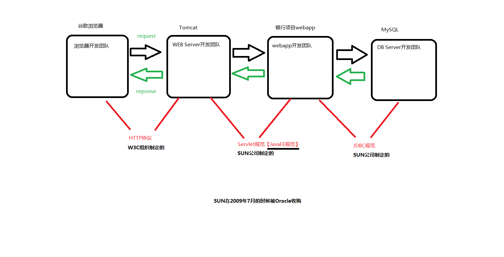
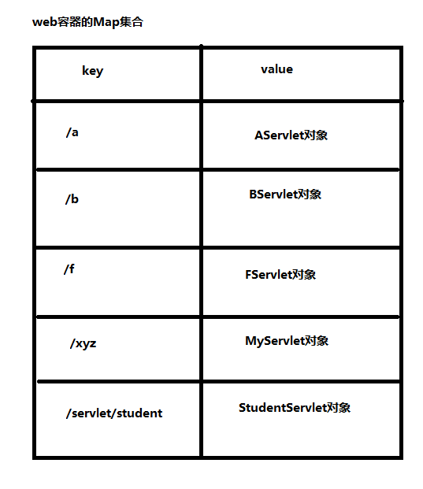

关于Tomcat服务器的目录
配置Tomcat服务器需要哪些环境变量？
关闭Tomcat：stop （shutdown.bat文件重命名为stop.bat，为什么？原因是shutdown命令和windows中的关机命令冲突。所以修改一下。）
怎么测试Tomcat服务器有没有启动成功呢？
第一步：找到CATALINA_HOME\webapps目录
因为所有的webapp要放到webapps目录下。（没有为什么，这是Tomcat服务器的要求。如果不放到这里，Tomcat服务器找不到你的应用。）
第二步：在CATALINA_HOME\webapps目录下新建一个子目录，起名：oa
这个目录名oa就是你这个webapp的名字。
第三步：在oa目录下新建资源文件，例如：index.html
编写index.html文件的内容。
第五步：打开浏览器，在浏览器地址栏上输入这样的URL：
http://127.0.0.1:8080/oa/index.html
思考一个问题：
我们在浏览器上直接输入一个URL，然后回车。这个动作和超链接一样吗？既然是一样的，我们完全可以使用超链接。
<!--注意以下的路径，以/开始，带项目名，是一个绝对路径。不需要添加：http://127.0.0.1:8080-->
<a href="/oa/login.html">user login2</a>
<!--多个层级也没有关系，正常访问即可。-->
<!--注意：我们目前前端上的路径都以“/”开始的，都是加项目名的。-->
<a href="/oa/test/debug/d.html">d page</a>


开发步骤是怎样的？
第一步：在webapps目录下新建一个目录，起名crm（这个crm就是webapp的名字）。当然，也可以是其它项目，比如银行项目，可以创建一个目录bank，办公系统可以创建一个oa。
第二步：在webapp的根下新建一个目录：WEB-INF
第三步：在WEB-INF目录下新建一个目录：classes
第四步：在WEB-INF目录下新建一个目录：lib
第五步：在WEB-INF目录下新建一个文件：web.xml
注意：这个文件是必须的，这个文件名必须叫做web.xml。这个文件必须放在这里。一个合法的webapp，web.xml文件是必须的，这个web.xml文件就是一个配置文件，在这个配置文件中描述了请求路径和Servlet类之间的对照关系。
这个文件最好从其他的webapp中拷贝，最好别手写。没必要。复制粘贴
```xml
```
第六步：编写一个Java程序，这个小Java程序也不能随意开发，这个小java程序必须实现Servlet接口。
这个Servlet接口不在JDK当中。（因为Servlet不是JavaSE了。Servlet属于JavaEE，是另外的一套类库。）
jakarta.servlet.Servlet注意：编写这个Java小程序的时候，java源代码你愿意在哪里就在哪里，位置无所谓，你只需要将java源代码编译之后的class文件放到classes目录下即可。
第七步：编译我们编写的HelloServlet
重点：你怎么能让你的HelloServlet编译通过呢？配置环境变量CLASSPATH
CLASSPATH=.;C:\dev\apache-tomcat-10.0.12\lib\servlet-api.jar
思考问题：以上配置的CLASSPATH和Tomcat服务器运行有没有关系？
第八步：将以上编译之后的HelloServlet.class文件拷贝到WEB-INF\classes目录下。
第九步：在web.xml文件中编写配置信息，让“请求路径”和“Servlet类名”关联在一起。
这一步用专业术语描述：在web.xml文件中注册Servlet类。
```xml
```
第十步：启动Tomcat服务器
第十一步：打开浏览器，在浏览器地址栏上输入一个url，这个URL必须是：
浏览器上编写的路径太复杂，可以使用超链接。（非常重要：html页面只能放到WEB-INF目录外面。）
以后不需要我们编写main方法了。tomcat服务器负责调用main方法，Tomcat服务器启动的时候执行的就是main方法。我们javaweb程序员只需要编写Servlet接口的实现类，然后将其注册到web.xml文件中，即可。
总结一下：一个合法的webapp目录结构应该是怎样的？
webapproot
|------WEB-INF
|------classes(存放字节码)
|------lib(第三方jar包)
|------web.xml(注册Servlet)
|------html
|------css
|------javascript
|------image
....
浏览器发送请求，到最终服务器调用Servlet中的方法，是怎样的一个过程？（以下这个过程描述的很粗糙。其中还有很多步骤我省略了。）
将CATALINA_HOME/conf/logging.properties文件中的内容修改如下：
java.util.logging.ConsoleHandler.encoding = GBK
public void service(ServletRequest request, ServletResponse response){
response.setContentType("text/html");
PrintWriter out = response.getWriter();
out.print("<h1>hello servlet!</h1>");
}
集成开发工具很多，其中目前使用比较多的是：
IntelliJ IDEA（这个居多，IDEA在提示功能方面要强于Eclipse，也就是说IDEA使用起来比Eclipse更加智能，更好用。JetBrain公司开发的。收费的。）
Eclipse（这个少一些），Eclipse目前还是有团队使用，只不过处于减少的趋势，自己从事工作之后，可能会遇到。Eclipse是IBM团队开发的。Eclipse寓意是“日食”。“日食”表示将太阳吃掉。太阳是SUN。IBM团队开发Eclipse的寓意是吞并SUN公司，但是2009年的时候SUN公司被Oracle公司并购了。IBM并没有成功并购SUN公司。
使用IDEA集成开发工具开发Servlet
第一步：New Project（我比较习惯先创建一个Empty Project【空工程】，然后在空工程下新建Module【模块】，这不是必须的，只是一种习惯，你可以直接新建非空的Project），这个Empty Project起名为：javaweb（不是必须的，只是一个名字而已。一般情况下新建的Project的名字最好和目录的名字一致。）
<?xml version="1.0" encoding="UTF-8"?>
<web-app xmlns="http://xmlns.jcp.org/xml/ns/javaee"
xmlns:xsi="http://www.w3.org/2001/XMLSchema-instance"
xsi:schemaLocation="http://xmlns.jcp.org/xml/ns/javaee http://xmlns.jcp.org/xml/ns/javaee/web-app_4_0.xsd"
version="4.0">
<servlet>
<servlet-name>studentServlet</servlet-name>
<servlet-class>com.bjpowernode.javaweb.servlet.StudentServlet</servlet-class>
</servlet>
<servlet-mapping>
<servlet-name>studentServlet</servlet-name>
<url-pattern>/servlet/student</url-pattern>
</servlet-mapping>
</web-app>
第九步：给一个html页面，在HTML页面中编写一个超链接，用户点击这个超链接，发送请求，Tomcat执行后台的StudentServlet。
student.html
这个文件不能放到WEB-INF目录里面，只能放到WEB-INF目录外面。
student.html文件的内容
html
<!DOCTYPE html>
<html lang="en">
<head>
<meta charset="UTF-8">
<title>student page</title>
</head>
<body>
<!--这里的项目名是 /xmm ，无法动态获取，先写死-->
<a href="/xmm/servlet/student">student list</a>
</body>
</html>
第十步：让IDEA工具去关联Tomcat服务器。关联的过程当中将webapp部署到Tomcat服务器当中。
第十一步：启动Tomcat服务器
第十二步：打开浏览器，在浏览器地址栏上输入：http://localhost:8080/xmm/student.html
https://www.jetbrains.com/help/idea/creating-and-running-your-first-jakarta-ee-application.html#run_config
/opt/homebrew/Cellar/maven/3.9.11/libexec/package com.charles.servlet;
import jakarta.servlet.*;
import java.io.IOException;
import java.sql.Connection;
import java.sql.DriverManager;
import java.sql.PreparedStatement;
import java.sql.ResultSet;
public class StudentServlet implements Servlet {
@Override
public void init(ServletConfig servletConfig) throws ServletException {
System.out.println("StudentServlet init");
}
@Override
public ServletConfig getServletConfig() {
return null;
}
@Override
public void service(ServletRequest servletRequest, ServletResponse servletResponse) throws ServletException, IOException {
Connection conn = null;
PreparedStatement ps = null;
ResultSet rs = null;
try{
Class.forName("com.mysql.cj.jdbc.Driver");
conn = DriverManager.getConnection("jdbc:mysql://localhost:3306/learnjdbc", "root", "");
ps = conn.prepareStatement("select * from tbl_student");
rs = ps.executeQuery();
while(rs.next()){
System.out.println(rs.getInt(1)+"--"+rs.getString(2)+"--"+rs.getInt(3));
}
}catch (Exception e){
e.printStackTrace();
}finally {
if(conn!=null)
try{
conn.close();
} catch (Exception e) {
e.printStackTrace();
}
if(ps!=null)
try{
ps.close();
} catch (Exception e) {
e.printStackTrace();
}
}
}
@Override
public String getServletInfo() {
return "";
}
@Override
public void destroy() {
}
}
<?xml version="1.0" encoding="UTF-8"?>
<web-app xmlns="https://jakarta.ee/xml/ns/jakartaee"
xmlns:xsi="http://www.w3.org/2001/XMLSchema-instance"
xsi:schemaLocation="https://jakarta.ee/xml/ns/jakartaee https://jakarta.ee/xml/ns/jakartaee/web-app_6_0.xsd"
version="6.0">
<servlet>
<servlet-name>StudentServlet</servlet-name>
<servlet-class>com.charles.servlet.StudentServlet</servlet-class>
</servlet>
<servlet-mapping>
<servlet-name>StudentServlet</servlet-name>
<url-pattern>/student-servlet</url-pattern>
</servlet-mapping>
</web-app>
<%@ page contentType="text/html; charset=UTF-8" pageEncoding="UTF-8" %>
<!DOCTYPE html>
<html>
<head>
<title>JSP - Hello World</title>
</head>
<body>
<h1><%= "Hello World!" %></h1>
<br/>
<a href="hello-servlet">Hello Servlet</a>
<br/>
<a href="student-servlet">Student List</a>
</body>
</html>
http://localhost:8080/servlet_war_exploded/student-servlet
<load-on-startup>子标签，在该子标签中填写整数，越小的整数优先级越高。 <servlet>
<servlet-name>aservlet</servlet-name>
<servlet-class>com.bjpowernode.javaweb.servlet.AServlet</servlet-class>
<load-on-startup>1</load-on-startup>
</servlet>
<servlet-mapping>
<servlet-name>aservlet</servlet-name>
<url-pattern>/a</url-pattern>
</servlet-mapping>
AServlet无参数构造方法执行了
AServlet's init method execute!
AServlet's service method execute!
根据以上输出内容得出结论：
用户继续发送第二次请求，控制台输出了以下内容：
AServlet's service method execute!
根据以上输出结果得知，用户在发送第二次，或者第三次，或者第四次请求的时候，Servlet对象并没有新建，还是使用之前创建好的Servlet对象，直接调用该Servlet对象的service方法，这说明：
关闭服务器的时候，控制台输出了以下内容：
AServlet's destroy method execute!
通过以上输出内容，可以得出以下结论：
请问：destroy方法调用的时候，对象销毁了还是没有销毁呢？
Servlet对象更像一个人的一生：
关于Servlet类中方法的调用次数？
当我们Servlet类中编写一个有参数的构造方法，如果没有手动编写无参数构造方法会出现什么问题？
思考：Servlet的无参数构造方法是在对象第一次创建的时候执行，并且只执行一次。init方法也是在对象第一次创建的时候执行，并且只执行一次。那么这个无参数构造方法可以代替掉init方法吗？
init、service、destroy方法中使用最多的是哪个方法？
我们编写一个Servlet类直接实现Servlet接口有什么缺点？
我们只需要service方法，其他方法大部分情况下是不需要使用的。代码很丑陋。
适配器设计模式Adapter
手机直接插到220V的电压上，手机直接就报废了。怎么办？可以找一个充电器。这个充电器就是一个适配器。手机连接适配器。适配器连接220V的电压。这样问题就解决了。
编写一个GenericServlet类，这个类是一个抽象类，其中有一个抽象方法service。
GenericServlet实现Servlet接口。
以后编写的所有Servlet类继承GenericServlet，重写service方法即可。
思考：GenericServlet类是否需要改造一下？怎么改造？更利于子类程序的编写？
思考第一个问题：我提供了一个GenericServlet之后，init方法还会执行吗？
思考第二个问题：init方法是谁调用的？
思考第三个问题：init方法中的ServletConfig对象是谁创建的？是谁传过来的？
思考一下Tomcat服务器伪代码：
```java public class Tomcat { public static void main(String[] args){ // ..... // Tomcat服务器伪代码 // 创建LoginServlet对象（通过反射机制，调用无参数构造方法来实例化LoginServlet对象） Class clazz = Class.forName("com.bjpowernode.javaweb.servlet.LoginServlet"); Object obj = clazz.newInstance();
// 向下转型
Servlet servlet = (Servlet)obj;
// 创建ServletConfig对象
// Tomcat服务器负责将ServletConfig对象实例化出来。
// 多态（Tomcat服务器完全实现了Servlet规范）
ServletConfig servletConfig = new org.apache.catalina.core.StandardWrapperFacade();
// 调用Servlet的init方法
servlet.init(servletConfig);
// 调用Servlet的service方法
// ....
} } ```
什么是ServletConfig？
一个Servlet对应一个ServletConfig对象。
Servlet对象是Tomcat服务器创建，并且ServletConfig对象也是Tomcat服务器创建。并且默认情况下，他们都是在用户发送第一次请求的时候创建。
Tomcat服务器调用Servlet对象的init方法的时候需要传一个ServletConfig对象的参数给init方法。
ServletConfig接口的实现类是Tomcat服务器给实现的。（Tomcat服务器说的就是WEB服务器。）
ServletConfig接口有哪些常用的方法？
java
public String getInitParameter(String name); // 通过初始化参数的name获取value
public Enumeration<String> getInitParameterNames(); // 获取所有的初始化参数的name
public ServletContext getServletContext(); // 获取ServletContext对象
public String getServletName(); // 获取Servlet的name
以上方法在Servlet类当中，都可以使用this去调用。因为GenericServlet实现了ServletConfig接口。
默认的配置可以在配置文件中指定
<?xml version="1.0" encoding="UTF-8"?>
<web-app xmlns="https://jakarta.ee/xml/ns/jakartaee"
xmlns:xsi="http://www.w3.org/2001/XMLSchema-instance"
xsi:schemaLocation="https://jakarta.ee/xml/ns/jakartaee https://jakarta.ee/xml/ns/jakartaee/web-app_6_0.xsd"
version="6.0">
<!-- StudentServlet 配置 -->
<servlet>
<servlet-name>StudentServlet</servlet-name>
<servlet-class>com.charles.servlet.StudentServlet</servlet-class>
<!-- 数据库连接配置参数 -->
<init-param>
<param-name>driver</param-name>
<param-value>com.mysql.cj.jdbc.Driver</param-value>
</init-param>
<init-param>
<param-name>url</param-name>
<param-value>jdbc:mysql://localhost:3306/student_db</param-value>
</init-param>
<init-param>
<param-name>user</param-name>
<param-value>root</param-value>
</init-param>
<init-param>
<param-name>password</param-name>
<param-value>root1234</param-value>
</init-param>
</servlet>
<servlet-mapping>
<servlet-name>StudentServlet</servlet-name>
<url-pattern>/student-servlet</url-pattern>
</servlet-mapping>
</web-app>
然后调用的时候
package com.charles.servlet;
import jakarta.servlet.*;
import jakarta.servlet.http.HttpServletRequest;
import java.io.IOException;
import java.sql.*;
import java.util.ArrayList;
import java.util.List;
import java.util.logging.Level;
import java.util.logging.Logger;
public class StudentServlet implements Servlet {
private static final Logger LOGGER = Logger.getLogger(StudentServlet.class.getName());
private ServletConfig servletConfig;
@Override
public void init(ServletConfig servletConfig) throws ServletException {
this.servletConfig = servletConfig;
LOGGER.info("StudentServlet initialized");
// 加载数据库驱动
try {
Class.forName("com.mysql.cj.jdbc.Driver");
LOGGER.info("MySQL JDBC Driver loaded successfully");
} catch (ClassNotFoundException e) {
LOGGER.log(Level.SEVERE, "Failed to load MySQL JDBC Driver", e);
throw new ServletException("Failed to load database driver", e);
}
}
@Override
public ServletConfig getServletConfig() {
return this.servletConfig;
}
@Override
public void service(ServletRequest request, ServletResponse response) throws ServletException, IOException {
List<Student> students = new ArrayList<>();
try (Connection conn = getConnection();
PreparedStatement ps = conn.prepareStatement("SELECT * FROM tbl_student");
ResultSet rs = ps.executeQuery()) {
while (rs.next()) {
Student student = new Student(
rs.getInt("id"),
rs.getString("name"),
rs.getInt("age")
);
students.add(student);
LOGGER.info("Retrieved student: " + student);
}
// 这里可以添加将学生数据输出到响应的逻辑
response.setContentType("text/plain");
response.getWriter().println("Retrieved " + students.size() + " students");
} catch (SQLException e) {
LOGGER.log(Level.SEVERE, "Database access error", e);
throw new ServletException("Database access error", e);
}
}
private Connection getConnection() throws SQLException {
// 从web.xml获取配置参数（如果配置了）
String url = servletConfig.getInitParameter("url");
String user = servletConfig.getInitParameter("user");
String password = servletConfig.getInitParameter("password");
// 如果没有配置参数，使用默认值
if (url == null) url = "jdbc:mysql://localhost:3306/learnjdbc";
if (user == null) user = "root";
if (password == null) password = "";
return DriverManager.getConnection(url, user, password);
}
@Override
public String getServletInfo() {
return "StudentServlet handles student data operations";
}
@Override
public void destroy() {
LOGGER.info("StudentServlet destroyed");
}
// 内部Student类
private static class Student {
private final int id;
private final String name;
private final int age;
public Student(int id, String name, int age) {
this.id = id;
this.name = name;
this.age = age;
}
@Override
public String toString() {
return id + "--" + name + "--" + age;
}
}
}
看这个： https://www.cnblogs.com/LJY-YSWZ/p/17535870.html
一个Servlet对象对应一个ServletConfig。100个Servlet对象则对应100个ServletConfig对象。
只要在同一个webapp当中，只要在同一个应用当中，所有的Servlet对象都是共享同一个ServletContext对象的。
下面方法在Servlet类当中，都可以使用this去调用。因为GenericServlet实现了ServletConfig接口。
// 通过初始化参数的name获取value
public String getInitParameter(String name);
// 获取所有的初始化参数的name
public Enumeration<String> getInitParameterNames();
// 获取ServletContext对象
public ServletContext getServletContext();
// 获取Servlet的name
public String getServletName();
ServletContext对象在服务器启动阶段创建，在服务器关闭的时候销毁。这就是ServletContext对象的生命周期。ServletContext对象是应用级对象。
Tomcat服务器中有一个webapps，这个webapps下可以存放webapp，可以存放多个webapp，假设有100个webapp，那么就有100个ServletContext对象。但是，总之，一个应用，一个webapp肯定是只有一个ServletContext对象。
ServletContext被称为Servlet上下文对象。（Servlet对象的四周环境对象。）
一个ServletContext对象通常对应的是一个web.xml文件。
ServletContext对应显示生活中的什么例子呢？
一个教室里有多个学生，那么每一个学生就是一个Servlet，这些学生都在同一个教室当中，那么我们可以把这个教室叫做ServletContext对象。那么也就是说放在这个ServletContext对象（环境）当中的数据，在同一个教室当中，物品都是共享的。比如：教室中有一个空调，所有的学生都可以操作。可见，空调是共享的。因为空调放在教室当中。教室就是ServletContext对象。
ServletContext是一个接口，Tomcat服务器对ServletContext接口进行了实现。
ServletContext对象的创建也是Tomcat服务器来完成的。启动webapp的时候创建的。
ServletContext接口中有哪些常用的方法？
java
public String getInitParameter(String name); // 通过初始化参数的name获取value
public Enumeration<String> getInitParameterNames(); // 获取所有的初始化参数的name
```xml
```
java
// 获取应用的根路径（非常重要），因为在java源代码当中有一些地方可能会需要应用的根路径，这个方法可以动态获取应用的根路径
// 在java源码当中，不要将应用的根路径写死，因为你永远都不知道这个应用在最终部署的时候，起一个什么名字。
public String getContextPath();
//String contextPath = application.getContextPath();
java
// 获取文件的绝对路径（真实路径）
public String getRealPath(String path);
```java // 通过ServletContext对象也是可以记录日志的 public void log(String message); public void log(String message, Throwable t); // 这些日志信息记录到哪里了？ // localhost.2021-11-05.log
// Tomcat服务器的logs目录下都有哪些日志文件？ //catalina.2021-11-05.log 服务器端的java程序运行的控制台信息。 //localhost.2021-11-05.log ServletContext对象的log方法记录的日志信息存储到这个文件中。 //localhost_access_log.2021-11-05.txt 访问日志 ```
```java // ServletContext对象还有另一个名字：应用域（后面还有其他域，例如：请求域、会话域）
// 如果所有的用户共享一份数据，并且这个数据很少的被修改，并且这个数据量很少，可以将这些数据放到ServletContext这个应用域中
// 为什么是所有用户共享的数据？ 不是共享的没有意义。因为ServletContext这个对象只有一个。只有共享的数据放进去才有意义。
// 为什么数据量要小？ 因为数据量比较大的话，太占用堆内存，并且这个对象的生命周期比较长，服务器关闭的时候，这个对象才会被销毁。大数据量会影响服务器的性能。占用内存较小的数据量可以考虑放进去。
// 为什么这些共享数据很少的修改，或者说几乎不修改？ // 所有用户共享的数据，如果涉及到修改操作，必然会存在线程并发所带来的安全问题。所以放在ServletContext对象中的数据一般都是只读的。
// 数据量小、所有用户共享、又不修改，这样的数据放到ServletContext这个应用域当中，会大大提升效率。因为应用域相当于一个缓存，放到缓存中的数据，下次在用的时候，不需要从数据库中再次获取，大大提升执行效率。
// 存（怎么向ServletContext应用域中存数据） public void setAttribute(String name, Object value); // map.put(k, v) // 取（怎么从ServletContext应用域中取数据） public Object getAttribute(String name); // Object v = map.get(k) // 删（怎么删除ServletContext应用域中的数据） public void removeAttribute(String name); // map.remove(k)
```
注意：以后我们编写Servlet类的时候，实际上是不会去直接继承GenericServlet类的，因为我们是B/S结构的系统，这种系统是基于HTTP超文本传输协议的，在Servlet规范当中，提供了一个类叫做HttpServlet，它是专门为HTTP协议准备的一个Servlet类。我们编写的Servlet类要继承HttpServlet。（HttpServlet是HTTP协议专用的。）使用HttpServlet处理HTTP协议更便捷。但是你需要直到它的继承结构：
``` jakarta.servlet.Servlet（接口）【爷爷】 jakarta.servlet.GenericServlet implements Servlet（抽象类）【儿子】 jakarta.servlet.http.HttpServlet extends GenericServlet（抽象类）【孙子】
我们以后编写的Servlet要继承HttpServlet类。 ```
大家到目前为止都接触过哪些缓存机制了？
堆内存当中的字符串常量池。
package com.charles.servlet;
import jakarta.servlet.*;
import java.io.*;
import java.util.*;
public class ContextStudentServlet extends GenericServlet {
@Override
public void init() throws ServletException {
super.init();
// 可以在初始化时获取 context-param ServletContext context = getServletContext();
String appName = context.getInitParameter("app.name");
System.out.println("Application initialized: " + appName);
}
@Override
public void service(ServletRequest request, ServletResponse response)
throws ServletException, IOException {
// 设置响应内容类型
response.setContentType("text/html;charset=UTF-8");
PrintWriter out = response.getWriter();
// 获取 ServletContext ServletContext context = getServletContext();
out.println("<html><head><title>Context Parameters Demo</title></head><body>");
out.println("<h2>ContextStudentServlet using GenericServlet</h2>");
// 显示 context-param 参数
out.println("<h3>Context Parameters:</h3>");
out.println("<ul>");
out.println("<li>App Name: " + context.getInitParameter("app.name") + "</li>");
out.println("<li>Version: " + context.getInitParameter("app.version") + "</li>");
out.println("<li>Admin Email: " + context.getInitParameter("admin.email") + "</li>");
out.println("<li>Max Students: " + context.getInitParameter("max.students") + "</li>");
out.println("<li>Debug Mode: " + context.getInitParameter("debug.mode") + "</li>");
out.println("</ul>");
// 获取所有 context-param 名称
out.println("<h3>All Context Parameters:</h3>");
out.println("<ul>");
Enumeration<String> paramNames = context.getInitParameterNames();
while (paramNames.hasMoreElements()) {
String paramName = paramNames.nextElement();
String paramValue = context.getInitParameter(paramName);
out.println("<li>" + paramName + " = " + paramValue + "</li>");
}
out.println("</ul>");
// 使用其他 ServletContext 方法
out.println("<h3>Other Context Information:</h3>");
out.println("<ul>");
out.println("<li>Context Path: " + context.getContextPath() + "</li>");
out.println("<li>Server Info: " + context.getServerInfo() + "</li>");
out.println("</ul>");
// 设置和获取属性
context.setAttribute("student.servlet.access.time", new Date());
out.println("<p>Attribute 'student.servlet.access.time' set to: " +
context.getAttribute("student.servlet.access.time") + "</p>");
out.println("</body></html>");
}
}
<%@ page contentType="text/html; charset=UTF-8" pageEncoding="UTF-8" %>
<!DOCTYPE html>
<html>
<head>
<title>JSP - Hello World</title>
</head>
<body>
<h1><%= "Hello World!" %></h1>
<br/>
<a href="hello-servlet">Hello Servlet</a>
<br/>
<a href="student-servlet">Student List</a>
<br/>
<a href="config-student-servlet">Config Student List</a>
<br/>
<a href="context-student-servlet">Context Student List</a>
</body>
</html>
<?xml version="1.0" encoding="UTF-8"?>
<web-app xmlns="https://jakarta.ee/xml/ns/jakartaee"
xmlns:xsi="http://www.w3.org/2001/XMLSchema-instance"
xsi:schemaLocation="https://jakarta.ee/xml/ns/jakartaee https://jakarta.ee/xml/ns/jakartaee/web-app_6_0.xsd"
version="6.0">
<!-- Context 初始化参数 -->
<context-param>
<param-name>app.name</param-name>
<param-value>Student Management System</param-value>
</context-param>
<context-param>
<param-name>app.version</param-name>
<param-value>1.0.0</param-value>
</context-param>
<context-param>
<param-name>admin.email</param-name>
<param-value>admin@studentsystem.com</param-value>
</context-param>
<context-param>
<param-name>max.students</param-name>
<param-value>1000</param-value>
</context-param>
<context-param>
<param-name>debug.mode</param-name>
<param-value>true</param-value>
</context-param>
<servlet>
<servlet-name>ContextStudentServlet</servlet-name>
<servlet-class>com.charles.servlet.ContextStudentServlet</servlet-class>
</servlet>
<servlet-mapping>
<servlet-name>ContextStudentServlet</servlet-name>
<url-pattern>/context-student-servlet</url-pattern>
</servlet-mapping>
</web-app>
## ContextStudentServlet using GenericServlet
### Context Parameters:
- App Name: Student Management System
- Version: 1.0.0
- Admin Email: admin@studentsystem.com
- Max Students: 1000
- Debug Mode: true
### All Context Parameters:
- debug.mode = true
- max.students = 1000
- admin.email = admin@studentsystem.com
- app.name = Student Management System
- app.version = 1.0.0
### Other Context Information:
- Context Path: /servlet_war_exploded
- Server Info: Apache Tomcat/11.0.11
Attribute 'student.servlet.access.time' set to: Sat Sep 13 14:28:40 CST 2025
什么是协议？
协议实际上是某些人，或者某些组织提前制定好的一套规范，大家都按照这个规范来，这样可以做到沟通无障碍。
我说的话你能听懂，你说的话，我也能听懂，这说明我们之间是有一套规范的，一套协议的，这套协议就是：中国普通话协议。我们都遵守这套协议，我们之间就可以沟通无障碍。
什么是HTTP协议？
HTTP协议：是W3C制定的一种超文本传输协议。（通信协议：发送消息的模板提前被制定好。）
HTTP协议就是提前制定好的一种消息模板。
HTTP的请求协议（B --> S）
HTTP的请求协议包括：4部分
HTTP请求协议的具体报文：GET请求
GET /servlet05/getServlet?username=lucy&userpwd=1111 HTTP/1.1 请求行
Host: localhost:8080 请求头
Connection: keep-alive
sec-ch-ua: "Google Chrome";v="95", "Chromium";v="95", ";Not A Brand";v="99"
sec-ch-ua-mobile: ?0
sec-ch-ua-platform: "Windows"
Upgrade-Insecure-Requests: 1
User-Agent: Mozilla/5.0 (Windows NT 10.0; Win64; x64) AppleWebKit/537.36 (KHTML, like Gecko) Chrome/95.0.4638.54 Safari/537.36
Accept: text/html,application/xhtml+xml,application/xml;q=0.9,image/avif,image/webp,image/apng,*/*;q=0.8,application/signed-exchange;v=b3;q=0.9
Sec-Fetch-Site: same-origin
Sec-Fetch-Mode: navigate
Sec-Fetch-User: ?1
Sec-Fetch-Dest: document
Referer: http://localhost:8080/servlet05/index.html
Accept-Encoding: gzip, deflate, br
Accept-Language: zh-CN,zh;q=0.9
空白行
请求体HTTP请求协议的具体报文：POST请求
POST /servlet05/postServlet HTTP/1.1 请求行
Host: localhost:8080 请求头
Connection: keep-alive
Content-Length: 25
Cache-Control: max-age=0
sec-ch-ua: "Google Chrome";v="95", "Chromium";v="95", ";Not A Brand";v="99"
sec-ch-ua-mobile: ?0
sec-ch-ua-platform: "Windows"
Upgrade-Insecure-Requests: 1
Origin: http://localhost:8080
Content-Type: application/x-www-form-urlencoded
User-Agent: Mozilla/5.0 (Windows NT 10.0; Win64; x64) AppleWebKit/537.36 (KHTML, like Gecko) Chrome/95.0.4638.54 Safari/537.36
Accept: text/html,application/xhtml+xml,application/xml;q=0.9,image/avif,image/webp,image/apng,*/*;q=0.8,application/signed-exchange;v=b3;q=0.9
Sec-Fetch-Site: same-origin
Sec-Fetch-Mode: navigate
Sec-Fetch-User: ?1
Sec-Fetch-Dest: document
Referer: http://localhost:8080/servlet05/index.html
Accept-Encoding: gzip, deflate, br
Accept-Language: zh-CN,zh;q=0.9
空白行
username=lisi&userpwd=123 请求体
请求行
请求头
空白行
请求体
HTTP的响应协议（S --> B）
HTTP的响应协议包括：4部分
HTTP响应协议的具体报文：
HTTP/1.1 200 ok 状态行
Content-Type: text/html;charset=UTF-8 响应头
Content-Length: 160
Date: Mon, 08 Nov 2021 13:19:32 GMT
Keep-Alive: timeout=20
Connection: keep-alive
空白行
<!doctype html> 响应体
<html>
<head>
<title>from get servlet</title>
</head>
<body>
<h1>from get servlet</h1>
</body>
</html>状态行
响应头：
空白行：
响应体：
怎么查看的协议内容？
使用chrome浏览器：F12。然后找到network，通过这个面板可以查看协议的具体内容。
怎么向服务器发送GET请求，怎么向服务器发送POST请求？
到目前为止，只有一种情况可以发送POST请求：使用form表单，并且form标签中的method属性值为：method="post"。
其他所有情况一律都是get请求：
GET请求和POST请求有什么区别？
get请求发送数据的时候，数据会挂在URI的后面，并且在URI后面添加一个“?”，"?"后面是数据。这样会导致发送的数据回显在浏览器的地址栏上。（get请求在“请求行”上发送数据）
post请求不支持缓存。（POST是用来修改服务器端的资源的。）
GET请求和POST请求如何选择，什么时候使用GET请求，什么时候使用POST请求？
怎么选择GET请求和POST请求呢？衡量标准是什么呢？你这个请求是想获取服务器端的数据，还是想向服务器发送数据。如果你是想从服务器上获取资源，建议使用GET请求，如果你这个请求是为了向服务器提交数据，建议使用POST请求。
其他情况都可以使用get请求。
不管你是get请求还是post请求，发送的请求数据格式是完全相同的，只不过位置不同，格式都是统一的：
name=value&name=value&name=value&name=value
jakarta.servlet.http.HttpServletpublic class HelloServlet extends HttpServlet {
// 用户第一次请求，创建HelloServlet对象的时候，会执行这个无参数构造方法。
public HelloServlet() {
}
//override 重写 doGet方法
//override 重写 doPost方法
}
public abstract class GenericServlet implements Servlet, ServletConfig,
java.io.Serializable {
// 用户第一次请求的时候，HelloServlet对象第一次被创建之后，这个init方法会执行。
public void init(ServletConfig config) throws ServletException {
this.config = config;
this.init();
}
// 用户第一次请求的时候，带有参数的init(ServletConfig config)执行之后，会执行这个没有参数的init()
public void init() throws ServletException {
// NOOP by default
}
}
// HttpServlet模板类。
public abstract class HttpServlet extends GenericServlet {
// 用户发送第一次请求的时候这个service会执行
// 用户发送第N次请求的时候，这个service方法还是会执行。
// 用户只要发送一次请求，这个service方法就会执行一次。
@Override
public void service(ServletRequest req, ServletResponse res)
throws ServletException, IOException {
HttpServletRequest request;
HttpServletResponse response;
try {
// 将ServletRequest和ServletResponse向下转型为带有Http的HttpServletRequest和HttpServletResponse
request = (HttpServletRequest) req;
response = (HttpServletResponse) res;
} catch (ClassCastException e) {
throw new ServletException(lStrings.getString("http.non_http"));
}
// 调用重载的service方法。
service(request, response);
}
// 这个service方法的两个参数都是带有Http的。
// 这个service是一个模板方法。
// 在该方法中定义核心算法骨架，具体的实现步骤延迟到子类中去完成。
protected void service(HttpServletRequest req, HttpServletResponse resp)
throws ServletException, IOException {
// 获取请求方式
// 这个请求方式最终可能是：""
// 注意：request.getMethod()方法获取的是请求方式，可能是七种之一：
// GET POST PUT DELETE HEAD OPTIONS TRACE
String method = req.getMethod();
// 如果请求方式是GET请求，则执行doGet方法。
if (method.equals(METHOD_GET)) {
long lastModified = getLastModified(req);
if (lastModified == -1) {
// servlet doesn't support if-modified-since, no reason
// to go through further expensive logic
doGet(req, resp);
} else {
long ifModifiedSince;
try {
ifModifiedSince = req.getDateHeader(HEADER_IFMODSINCE);
} catch (IllegalArgumentException iae) {
// Invalid date header - proceed as if none was set
ifModifiedSince = -1;
}
if (ifModifiedSince < (lastModified / 1000 * 1000)) {
// If the servlet mod time is later, call doGet()
// Round down to the nearest second for a proper compare
// A ifModifiedSince of -1 will always be less
maybeSetLastModified(resp, lastModified);
doGet(req, resp);
} else {
resp.setStatus(HttpServletResponse.SC_NOT_MODIFIED);
}
}
} else if (method.equals(METHOD_HEAD)) {
long lastModified = getLastModified(req);
maybeSetLastModified(resp, lastModified);
doHead(req, resp);
} else if (method.equals(METHOD_POST)) {
// 如果请求方式是POST请求，则执行doPost方法。
doPost(req, resp);
} else if (method.equals(METHOD_PUT)) {
doPut(req, resp);
} else if (method.equals(METHOD_DELETE)) {
doDelete(req, resp);
} else if (method.equals(METHOD_OPTIONS)) {
doOptions(req,resp);
} else if (method.equals(METHOD_TRACE)) {
doTrace(req,resp);
} else {
//
// Note that this means NO servlet supports whatever
// method was requested, anywhere on this server.
//
String errMsg = lStrings.getString("http.method_not_implemented");
Object[] errArgs = new Object[1];
errArgs[0] = method;
errMsg = MessageFormat.format(errMsg, errArgs);
resp.sendError(HttpServletResponse.SC_NOT_IMPLEMENTED, errMsg);
}
}
protected void doGet(HttpServletRequest req, HttpServletResponse resp)
throws ServletException, IOException{
// 报405错误
String msg = lStrings.getString("http.method_get_not_supported");
sendMethodNotAllowed(req, resp, msg);
}
protected void doPost(HttpServletRequest req, HttpServletResponse resp)
throws ServletException, IOException {
// 报405错误
String msg = lStrings.getString("http.method_post_not_supported");
sendMethodNotAllowed(req, resp, msg);
}
}
/*
通过以上源代码分析：
假设前端发送的请求是get请求，后端程序员重写的方法是doPost
假设前端发送的请求是post请求，后端程序员重写的方法是doGet
会发生什么呢？
发生405这样的一个错误。
405表示前端的错误，发送的请求方式不对。和服务器不一致。不是服务器需要的请求方式。
通过以上源代码可以知道：只要HttpServlet类中的doGet方法或doPost方法执行了，必然405.
怎么避免405的错误呢？
后端重写了doGet方法，前端一定要发get请求。
后端重写了doPost方法，前端一定要发post请求。
这样可以避免405错误。
这种前端到底需要发什么样的请求，其实应该后端说了算。后端让发什么方式，前端就得发什么方式。
有的人，你会看到为了避免405错误，在Servlet类当中，将doGet和doPost方法都进行了重写。
这样，确实可以避免405的发生，但是不建议，405错误还是有用的。该报错的时候就应该让他报错。
如果你要是同时重写了doGet和doPost，那还不如你直接重写service方法好了。这样代码还能
少写一点。
*/
可以，只不过你享受不到405错误。享受不到HTTP协议专属的东西。
到今天我们终于得到了最终的一个Servlet类的开发步骤：
使用httpservlet只需要进行简单的配置
package com.charles.servlet;
import jakarta.servlet.ServletException;
import jakarta.servlet.http.HttpServlet;
import jakarta.servlet.http.HttpServletRequest;
import jakarta.servlet.http.HttpServletResponse;
import java.io.IOException;
import java.io.PrintWriter;
public class MyHttpServlet extends HttpServlet {
/**
* 重写service方法，统一处理所有类型的请求
*/
@Override
public void service(HttpServletRequest req, HttpServletResponse res)
throws ServletException, IOException {
System.out.println("Service method called for: " + req.getMethod());
// 调用父类的service方法，它会根据HTTP方法类型自动分发到doGet/doPost等方法
super.service(req, res);
}
/**
* 处理GET请求 - 显示登录表单
*/
@Override
protected void doGet(HttpServletRequest req, HttpServletResponse resp)
throws ServletException, IOException {
resp.setContentType("text/html;charset=UTF-8");
PrintWriter out = resp.getWriter();
out.println("<html>");
out.println("<head><title>用户登录</title></head>");
out.println("<body>");
out.println("<h2>用户登录</h2>");
out.println("<form method='post' action='httpservlet-demo'>");
out.println("用户名: <input type='text' name='username'><br><br>");
out.println("密码: <input type='password' name='password'><br><br>");
out.println("<input type='submit' value='登录'>");
out.println("</form>");
out.println("</body>");
out.println("</html>");
}
/**
* 处理POST请求 - 处理登录表单提交
*/
@Override
protected void doPost(HttpServletRequest req, HttpServletResponse resp)
throws ServletException, IOException {
resp.setContentType("text/html;charset=UTF-8");
PrintWriter out = resp.getWriter();
// 获取表单参数
String username = req.getParameter("username");
String password = req.getParameter("password");
// 简单验证
if ("admin".equals(username) && "123456".equals(password)) {
out.println("<html><body>");
out.println("<h2>登录成功</h2>");
out.println("<p>欢迎, " + username + "!</p>");
out.println("</body></html>");
} else {
out.println("<html><body>");
out.println("<h2>登录失败</h2>");
out.println("<p>用户名或密码错误!</p>");
out.println("<a href='httpservlet-demo'>重新登录</a>");
out.println("</body></html>");
}
}
}
什么是一个web站点的欢迎页面？
对于一个webapp来说，我们是可以设置它的欢迎页面的。
如果我们访问的方式是：
怎么设置欢迎页面呢？
第一步：我在IDEA工具的web目录下新建了一个文件login.html
第二步：在web.xml文件中进行了以下的配置
xml
<welcome-file-list>
<welcome-file>login.html</welcome-file>
</welcome-file-list>
注意：设置欢迎页面的时候，这个路径不需要以“/”开始。并且这个路径默认是从webapp的根下开始查找。
第三步：启动服务器，浏览器地址栏输入地址
如果在webapp的根下新建一个目录，目录中再给一个文件，那么这个欢迎页该如何设置呢？
在webapp根下新建page1
在page1下新建page2目录
在page2目录下新建page.html页面
在web.xml文件中应该这样配置
<welcome-file-list>
<welcome-file>page1/page2/page.html</welcome-file>
</welcome-file-list>
注意：路径不需要以“/”开始，并且路径默认从webapp的根下开始找。
一个webapp是可以设置多个欢迎页面的
xml
<welcome-file-list>
<welcome-file>page1/page2/page.html</welcome-file>
<welcome-file>login.html</welcome-file>
</welcome-file-list>
注意：越靠上的优先级越高。找不到的继续向下找。
你有没有注意一件事：当我的文件名设置为index.html的时候，不需要在web.xml文件中进行配置欢迎页面。这是为什么？
这是因为小猫咪Tomcat服务器已经提前配置好了。
实际上配置欢迎页面有两个地方可以配置：
一个是在webapp内部的web.xml文件中。（在这个地方配置的属于局部配置）
一个是在CATALINA_HOME/conf/web.xml文件中进行配置。（在这个地方配置的属于全局配置）
xml
<welcome-file-list>
<welcome-file>index.html</welcome-file>
<welcome-file>index.htm</welcome-file>
<welcome-file>index.jsp</welcome-file>
</welcome-file-list>
Tomcat服务器的全局欢迎页面是：index.html index.htm index.jsp。如果你一个web站点没有设置局部的欢迎页面，Tomcat服务器就会以index.html index.htm index.jsp作为一个web站点的欢迎页面。
注意原则：局部优先原则。（就近原则）
欢迎页可以是一个Servlet吗？
当然可以。
你不要多想，欢迎页就是一个资源，既然是一个资源，那么可以是静态资源，也可以是动态资源。
静态资源：index.html welcome.html .....
动态资源：Servlet类。
步骤：
第一步：写一个Servlet
java
public class WelcomeServlet extends HttpServlet {
@Override
protected void doGet(HttpServletRequest request, HttpServletResponse response) throws ServletException, IOException {
response.setContentType("text/html");
PrintWriter out = response.getWriter();
out.print("<h1>welcome to bjpowernode!</h1>");
}
}
第二步：在web.xml文件中配置servlet
xml
<servlet>
<servlet-name>welcomeServlet</servlet-name>
<servlet-class>com.bjpowernode.javaweb.servlet.WelcomeServlet</servlet-class>
</servlet>
<servlet-mapping>
<servlet-name>welcomeServlet</servlet-name>
<url-pattern>/fdsa/fds/a/fds/af/ds/af/dsafdsafdsa</url-pattern>
</servlet-mapping>
第三步：在web.xml文件中配置欢迎页
xml
<welcome-file-list>
<welcome-file>fdsa/fds/a/fds/af/ds/af/dsafdsafdsa</welcome-file>
</welcome-file-list>
HttpServletRequest是一个接口，全限定名称：jakarta.servlet.http.HttpServletRequest
HttpServletRequest接口是Servlet规范中的一员。
HttpServletRequest接口的父接口：ServletRequest
java
public interface HttpServletRequest extends ServletRequest {}
HttpServletRequest接口的实现类谁写的? HttpServletRequest对象是谁给创建的？
通过测试：org.apache.catalina.connector.RequestFacade 实现了 HttpServletRequest接口
java
public class RequestFacade implements HttpServletRequest {}测试结果说明：Tomcat服务器（WEB服务器、WEB容器）实现了HttpServletRequest接口，还是说明了Tomcat服务器实现了Servlet规范。而对于我们javaweb程序员来说，实际上不需要关心这个，我们只需要面向接口编程即可。我们关心的是HttpServletRequest接口中有哪些方法，这些方法可以完成什么功能！！！！
HttpServletRequest对象中都有什么信息？都包装了什么信息？
HttpServletRequest对象是Tomcat服务器负责创建的。这个对象中封装了什么信息？封装了HTTP的请求协议。
javaweb程序员面向HttpServletRequest接口编程，调用方法就可以获取到请求的信息了。
request和response对象的生命周期？
request对象和response对象，一个是请求对象，一个是响应对象。这两个对象只在当前请求中有效。
.....
HttpServletRequest接口中有哪些常用的方法？
怎么获取前端浏览器用户提交的数据？
java
Map<String,String[]> getParameterMap() 这个是获取Map
Enumeration<String> getParameterNames() 这个是获取Map集合中所有的key
String[] getParameterValues(String name) 根据key获取Map集合的value
String getParameter(String name) 获取value这个一维数组当中的第一个元素。这个方法最常用。
// 以上的4个方法，和获取用户提交的数据有关系。
思考：如果是你，前端的form表单提交了数据之后，你准备怎么存储这些数据，你准备采用什么样的数据结构去存储这些数据呢？
前端提交的数据格式：username=abc&userpwd=111&aihao=s&aihao=d&aihao=tt
我会采用Map集合来存储：
java
Map<String,String>
key存储String
value存储String
这种想法对吗？不对。
如果采用以上的数据结构存储会发现key重复的时候value覆盖。
key value
---------------------
username abc
userpwd 111
aihao s
aihao d
aihao tt
这样是不行的，因为map的key不能重复。
Map<String, String[]>
key存储String
value存储String[]
key value
-------------------------------
username {"abc"}
userpwd {"111"}
aihao {"s","d","tt"}注意：前端表单提交数据的时候，假设提交了120这样的“数字”，其实是以字符串"120"的方式提交的，所以服务器端获取到的一定是一个字符串的"120"，而不是一个数字。（前端永远提交的是字符串，后端获取的也永远是字符串。）
手工开发一个webapp。测试HttpServletRequest接口中的相关方法。
先测试了4个常用的方法，获取请求参数的四个方法。
java
Map<String,String[]> parameterMap = request.getParameterMap();
Enumeration<String> names = request.getParameterNames();
String[] values = request.getParameterValues("name");
String value = request.getParameter("name");
request对象实际上又称为“请求域”对象。
应用域对象是什么？
ServletContext （Servlet上下文对象。）
什么情况下会考虑向ServletContext这个应用域当中绑定数据呢？
第一：所有用户共享的数据。
实际上向应用域当中绑定数据，就相当于把数据放到了缓存（Cache）当中，然后用户访问的时候直接从缓存中取，减少IO的操作，大大提升系统的性能，所以缓存技术是提高系统性能的重要手段。
你见过哪些缓存技术呢？
字符串常量池
后期你还会学习更多的缓存技术，例如：redis、mongoDB.....
ServletContext当中有三个操作域的方法：
```java void setAttribute(String name, Object obj); // 向域当中绑定数据。 Object getAttribute(String name); // 从域当中根据name获取数据。 void removeAttribute(String name); // 将域当中绑定的数据移除
// 以上的操作类似于Map集合的操作。
Map
“请求域”对象
“请求域”对象要比“应用域”对象范围小很多。生命周期短很多。请求域只在一次请求内有效。
一个请求对象request对应一个请求域对象。一次请求结束之后，这个请求域就销毁了。
请求域对象也有这三个方法：
java
void setAttribute(String name, Object obj); // 向域当中绑定数据。
Object getAttribute(String name); // 从域当中根据name获取数据。
void removeAttribute(String name); // 将域当中绑定的数据移除
请求域和应用域的选用原则？
尽量使用小的域对象，因为小的域对象占用的资源较少。
跳转
转发（一次请求）
```java // 第一步：获取请求转发器对象 RequestDispatcher dispatcher = request.getRequestDispatcher("/b"); // 第二步：调用转发器的forward方法完成跳转/转发 dispatcher.forward(request,response);
// 第一步和第二步代码可以联合在一起。 request.getRequestDispatcher("/b").forward(request,response);
```
两个Servlet怎么共享数据？
将数据放到ServletContext应用域当中，当然是可以的，但是应用域范围太大，占用资源太多。不建议使用。
可以将数据放到request域当中，然后AServlet转发到BServlet，保证AServlet和BServlet在同一次请求当中，这样就可以做到两个Servlet，或者多个Servlet共享同一份数据。
转发的下一个资源必须是一个Servlet吗？
不一定，只要是Tomcat服务器当中的合法资源，都是可以转发的。例如：html....
注意：转发的时候，路径的写法要注意，转发的路径以“/”开始，不加项目名。
关于request对象中两个非常容易混淆的方法：
```java
// uri?username=zhangsan&userpwd=123&sex=1 String username = request.getParameter("username");
// 之前一定是执行过：request.setAttribute("name", new Object()) Object obj = request.getAttribute("name");
// 以上两个方法的区别是什么？ // 第一个方法：获取的是用户在浏览器上提交的数据。 // 第二个方法：获取的是请求域当中绑定的数据。 ```
HttpServletRequest接口的其他常用方法：
// get请求在请求行上提交数据。 // post请求在请求体中提交数据。 // 设置请求体的字符集。（显然这个方法是处理POST请求的乱码问题。这种方式并不能解决get请求的乱码问题。） // Tomcat10之后，request请求体当中的字符集默认就是UTF-8，不需要设置字符集，不会出现乱码问题。 // Tomcat9前（包括9在内），如果前端请求体提交的是中文，后端获取之后出现乱码，怎么解决这个乱码？执行以下代码。 request.setCharacterEncoding("UTF-8");
// 在Tomcat9之前（包括9），响应中文也是有乱码的，怎么解决这个响应的乱码？ response.setContentType("text/html;charset=UTF-8"); // 在Tomcat10之后，包括10在内，响应中文的时候就不在出现乱码问题了。以上代码就不需要设置UTF-8了。
// 注意一个细节 // 在Tomcat10包括10在内之后的版本，中文将不再出现乱码。（这也体现了中文地位的提升。）
// get请求乱码问题怎么解决？
// get请求发送的时候，数据是在请求行上提交的，不是在请求体当中提交的。
// get请求乱码怎么解决
// 方案：修改CATALINA_HOME/conf/server.xml配置文件
// 获取应用的根路径 String contextPath = request.getContextPath();
// 获取请求方式 String method = request.getMethod();
// 获取请求的URI String uri = request.getRequestURI(); // /aaa/testRequest
// 获取servlet path String servletPath = request.getServletPath(); // /testRequest
```
使用纯粹的Servlet完成单表【对部门的】的增删改查操作。（B/S结构的。）
实现步骤
第一步：准备一张数据库表。（sql脚本）
sql
# 部门表
drop table if exists dept;
create table dept(
deptno int primary key,
dname varchar(255),
loc varchar(255)
);
insert into dept(deptno, dname, loc) values(10, 'XiaoShouBu', 'BEIJING');
insert into dept(deptno, dname, loc) values(20, 'YanFaBu', 'SHANGHAI');
insert into dept(deptno, dname, loc) values(30, 'JiShuBu', 'GUANGZHOU');
insert into dept(deptno, dname, loc) values(40, 'MeiTiBu', 'SHENZHEN');
commit;
select * from dept;第二步：准备一套HTML页面（项目原型）【前端开发工具使用HBuilder】
第三步：分析我们这个系统包括哪些功能？
第四步：在IDEA当中搭建开发环境
第五步：实现第一个功能：查看部门列表
我们应该怎么去实现一个功能呢？
建议：你可以从后端往前端一步一步写。也可以从前端一步一步往后端写。都可以。但是千万要记住不要想起来什么写什么。你写代码的过程最好是程序的执行过程。也就是说：程序执行到哪里，你就写哪里。这样一个顺序流下来之后，基本上不会出现什么错误、意外。
从哪里开始？
第一：先修改前端页面的超链接，因为用户先点击的就是这个超链接。
html
<a href="/oa/dept/list">查看部门列表</a>
第二：编写web.xml文件
xml
<servlet>
<servlet-name>list</servlet-name>
<servlet-class>com.bjpowernode.oa.web.action.DeptListServlet</servlet-class>
</servlet>
<servlet-mapping>
<servlet-name>list</servlet-name>
<!--web.xml文件中的这个路径也是以“/”开始的，但是不需要加项目名-->
<url-pattern>/dept/list</url-pattern>
</servlet-mapping>
第三：编写DeptListServlet类继承HttpServlet类。然后重写doGet方法。
```java package com.bjpowernode.oa.web.action;
import jakarta.servlet.ServletException; import jakarta.servlet.http.HttpServlet; import jakarta.servlet.http.HttpServletRequest; import jakarta.servlet.http.HttpServletResponse;
import java.io.IOException;
public class DeptListServlet extends HttpServlet { @Override protected void doGet(HttpServletRequest request, HttpServletResponse response) throws ServletException, IOException { } } ```
第四：在DeptListServlet类的doGet方法中连接数据库，查询所有的部门，动态的展示部门列表页面.
分析list.html页面中哪部分是固定死的，哪部分是需要动态展示的。
list.html页面中的内容所有的双引号要替换成单引号，因为out.print("")这里有一个双引号，容易冲突。
现在写完这个功能之后，你会有一种感觉，感觉开发很繁琐，只使用servlet写代码太繁琐了。
```java while(rs.next()){ String deptno = rs.getString("a"); String dname = rs.getString("dname"); String loc = rs.getString("loc");
out.print(" <tr>");
out.print(" <td>"+(++i)+"</td>");
out.print(" <td>"+deptno+"</td>");
out.print(" <td>"+dname+"</td>");
out.print(" <td>");
out.print(" <a href=''>删除</a>");
out.print(" <a href='edit.html'>修改</a>");
out.print(" <a href='detail.html'>详情</a>");
out.print(" </td>");
out.print(" </tr>");
} ```
第六步：查看部门详情。
建议：从前端往后端一步一步实现。首先要考虑的是，用户点击的是什么？用户点击的东西在哪里？
一定要先找到用户点的“详情”在哪里。找了半天，终于在后端的java程序中找到了
html
<a href='写一个路径'>详情</a>详情 是需要连接数据库的，所以这个超链接点击之后也是需要执行一段java代码的。所以要将这个超链接的路径修改一下。
注意：修改路径之后，这个路径是需要加项目名的。"/oa/dept/detail"
技巧：
java
out.print("<a href='"+contextPath+"/dept/detail?deptno="+deptno+"'>详情</a>");
- 重点：向服务器提交数据的格式：uri?name=value&name=value&name=value&name=value
- 这里的问号，必须是英文的问号。不能中文的问号。
解决404的问题。写web.xml文件。
xml
<servlet>
<servlet-name>detail</servlet-name>
<servlet-class>com.bjpowernode.oa.web.action.DeptDetailServlet</servlet-class>
</servlet>
<servlet-mapping>
<servlet-name>detail</servlet-name>
<url-pattern>/dept/detail</url-pattern>
</servlet-mapping>
编写一个类：DeptDetailServlet继承HttpServlet，重写doGet方法。
```java package com.bjpowernode.oa.web.action;
import jakarta.servlet.ServletException; import jakarta.servlet.http.HttpServlet; import jakarta.servlet.http.HttpServletRequest; import jakarta.servlet.http.HttpServletResponse;
import java.io.IOException;
public class DeptDetailServlet extends HttpServlet { @Override protected void doGet(HttpServletRequest request, HttpServletResponse response) throws ServletException, IOException { //中文思路（思路来源于：你要做什么？目标：查看部门详细信息。） // 第一步：获取部门编号 // 第二步：根据部门编号查询数据库，获取该部门编号对应的部门信息。 // 第三步：将部门信息响应到浏览器上。（显示一个详情。） } } ```
第七步：删除部门
怎么开始？从哪里开始？从前端页面开始，用户点击删除按钮的时候，应该提示用户是否删除。因为删除这个动作是比较危险的。任何系统在进行删除操作之前，是必须要提示用户的，因为这个删除的动作有可能是用户误操作。（在前端页面上写JS代码，来提示用户是否删除。）
html
<a href="javascript:void(0)" onclick="del(30)" >删除</a>
<script type="text/javascript">
function del(dno){
if(window.confirm("亲，删了不可恢复哦！")){
document.location.href = "/oa/dept/delete?deptno=" + dno;
}
}
</script>
以上的前端程序要写到后端的java代码当中：
DeptListServlet类的doGet方法当中，使用out.print()方法，将以上的前端代码输出到浏览器上。
解决404的问题：
http://localhost:8080/oa/dept/delete?deptno=30
web.xml文件
xml
<servlet>
<servlet-name>delete</servlet-name>
<servlet-class>com.bjpowernode.oa.web.action.DeptDelServlet</servlet-class>
</servlet>
<servlet-mapping>
<servlet-name>delete</servlet-name>
<url-pattern>/dept/delete</url-pattern>
</servlet-mapping>
编写DeptDelServlet继承HttpServlet，重写doGet方法。
```java package com.bjpowernode.oa.web.action;
import jakarta.servlet.ServletException; import jakarta.servlet.http.HttpServlet; import jakarta.servlet.http.HttpServletRequest; import jakarta.servlet.http.HttpServletResponse;
import java.io.IOException;
public class DeptDelServlet extends HttpServlet { @Override protected void doGet(HttpServletRequest request, HttpServletResponse response) throws ServletException, IOException { // 根据部门编号，删除部门。
}
} ```
删除成功或者失败的时候的一个处理（这里我们选择了转发，并没有使用重定向机制。）
java
// 判断删除成功了还是失败了。
if (count == 1) {
//删除成功
//仍然跳转到部门列表页面
//部门列表页面的显示需要执行另一个Servlet。怎么办？转发。
request.getRequestDispatcher("/dept/list").forward(request, response);
}else{
// 删除失败
request.getRequestDispatcher("/error.html").forward(request, response);
}
第八步：新增部门
第九步：跳转到修改部门的页面
第十步：修改部门
在一个web应用中通过两种方式，可以完成资源的跳转：
第一种方式：转发
第二种方式：重定向
转发和重定向有什么区别？
代码上有什么区别？
转发
```java // 获取请求转发器对象 RequestDispatcher dispatcher = request.getRequestDispatcher("/dept/list"); // 调用请求转发器对象的forward方法完成转发 dispatcher.forward(request, response);
// 合并一行代码 request.getRequestDispatcher("/dept/list").forward(request, response); // 转发的时候是一次请求，不管你转发了多少次。都是一次请求。 // AServlet转发到BServlet，再转发到CServlet，再转发到DServlet，不管转发了多少次，都在同一个request当中。 // 这是因为调用forward方法的时候，会将当前的request和response对象传递给下一个Servlet。 ```
重定向
java
// 注意：路径上要加一个项目名。为什么？
// 浏览器发送请求，请求路径上是需要添加项目名的。
// 以下这一行代码会将请求路径“/oa/dept/list”发送给浏览器
// 浏览器会自发的向服务器发送一次全新的请求：/oa/dept/list
response.sendRedirect("/oa/dept/list");
形式上有什么区别？
转发和重定向的本质区别？
使用一个例子去描述这个转发和重定向
转发和重定向应该如何选择？什么时候使用转发，什么时候使用重定向？
如果在上一个Servlet当中向request域当中绑定了数据，希望从下一个Servlet当中把request域里面的数据取出来，使用转发机制。
剩下所有的请求均使用重定向。（重定向使用较多。）
跳转的下一个资源有没有要求呢？必须是一个Servlet吗？
不一定，跳转的资源只要是服务器内部合法的资源即可。包括：Servlet、JSP、HTML.....
转发会存在浏览器的刷新问题。
分析oa项目中的web.xml文件
现在只是一个单标的CRUD，没有复杂的业务逻辑，很简单的一丢丢功能。web.xml文件中就有如此多的配置信息。如果采用这种方式，对于一个大的项目来说，这样的话web.xml文件会非常庞大，有可能最终会达到几十兆。
而且在web.xml文件中的配置是很少被修改的，所以这种配置信息能不能直接写到java类当中呢？可以的。
Servlet3.0版本之后，推出了各种Servlet基于注解式开发。优点是什么？
开发效率高，不需要编写大量的配置信息。直接在java类上使用注解进行标注。
web.xml文件体积变小了。
并不是说注解有了之后，web.xml文件就不需要了：
有一些需要变化的信息，还是要配置到web.xml文件中。一般都是 注解+配置文件 的开发模式。
一些不会经常变化修改的配置建议使用注解。一些可能会被修改的建议写到配置文件中。
我们的第一个注解：
jakarta.servlet.annotation.WebServlet
在Servlet类上使用：@WebServlet，WebServlet注解中有哪些属性呢？
<servlet-name><url-pattern><load-on-startup>注解对象的使用格式：
@注解名称(属性名=属性值, 属性名=属性值, 属性名=属性值....)
一个会话当中包含多次请求。（一次会话对应N次请求。）
在java的servlet规范当中，session对应的类名：HttpSession（jarkata.servlet.http.HttpSession）
session机制属于B/S结构的一部分。如果使用php语言开发WEB项目，同样也是有session这种机制的。session机制实际上是一个规范。然后不同的语言对这种会话机制都有实现。
session对象最主要的作用是：保存会话状态。（用户登录成功了，这是一种登录成功的状态，你怎么把登录成功的状态一直保存下来呢？使用session对象可以保留会话状态。）
为什么需要session对象来保存会话状态呢？
只要B和S断开了，那么关闭浏览器这个动作，服务器知道吗？
张三打开一个浏览器A，李四打开一个浏览器B，访问服务器之后，在服务器端会生成：
李四专属的session对象
为什么不使用request对象保存会话状态？为什么不使用ServletContext对象保存会话状态？
request < session < application
思考一下：session对象的实现原理。
这行代码很神奇。张三访问的时候获取的session对象就是张三的。李四访问的时候获取的session对象就是李四的。
session的实现原理：
JSESSIONID=xxxxxx 这个是以Cookie的形式保存在浏览器的内存中的。浏览器只要关闭。这个cookie就没有了。
关闭浏览器，内存消失，cookie消失，sessionid消失，会话等同于结束。
Cookie禁用了，session还能找到吗？
cookie禁用是什么意思？服务器正常发送cookie给浏览器，但是浏览器不要了。拒收了。并不是服务器不发了。
cookie禁用了，session机制还能实现吗？
总结一下到目前位置我们所了解的域对象：
request（对应的类名：HttpServletRequest）
使用原则：尽量使用小的域。
session掌握之后，我们怎么解决oa项目中的登录问题，怎么能让登录起作用。
登录成功之后，可以将用户的登录信息存储到session当中。也就是说session中如果有用户的信息就代表用户登录成功了。session中没有用户信息，表示用户没有登录过。则跳转到登录页面。
销毁session对象：
java
session.invalidate();
服务器就是根据41C481F0224664BDB28E95081D23D5B8这个值来找到对应的session对象的。
cookie怎么生成？cookie保存在什么地方？cookie有啥用？浏览器什么时候会发送cookie，发送哪些cookie给服务器？？？？？？？
cookie最终是保存在浏览器客户端上的。
可以保存在运行内存中。（浏览器只要关闭cookie就消失了。）
也可以保存在硬盘文件中。（永久保存。）
cookie有啥用呢？
cookie和session机制其实都是为了保存会话的状态。
为什么要有cookie和session机制呢？因为HTTP协议是无状态 无连接协议。
cookie的经典案例
京东商城，在未登录的情况下，向购物车中放几件商品。然后关闭商城，再次打开浏览器，访问京东商城的时候，购物车中的商品还在，这是怎么做的？我没有登录，为什么购物车中还有商品呢？
126邮箱中有一个功能：十天内免登录
cookie机制和session机制其实都不属于java中的机制，实际上cookie机制和session机制都是HTTP协议的一部分。php开发中也有cookie和session机制，只要是你是做web开发，不管是什么编程语言，cookie和session机制都是需要的。
HTTP协议中规定：任何一个cookie都是由name和value组成的。name和value都是字符串类型的。
在java的servlet中，对cookie提供了哪些支持呢？
提供了一个Cookie类来专门表示cookie数据。jakarta.servlet.http.Cookie;
java程序怎么把cookie数据发送给浏览器呢？response.addCookie(cookie);
在HTTP协议中是这样规定的：当浏览器发送请求的时候，会自动携带该path下的cookie数据给服务器。（URL。）
关于cookie的有效时间
怎么用java设置cookie的有效时间
设置cookie的有效时间 < 0 呢？
关于cookie的path，cookie关联的路径：
假设现在发送的请求路径是“http://localhost:8080/servlet13/cookie/generate”生成的cookie，如果cookie没有设置path，默认的path是什么？
手动设置cookie的path
浏览器发送cookie给服务器了，服务器中的java程序怎么接收？
```java Cookie[] cookies = request.getCookies(); // 这个方法可能返回null if(cookies != null){ for(Cookie cookie : cookies){ // 获取cookie的name String name = cookie.getName(); // 获取cookie的value String value = cookie.getValue(); } }
```
使用cookie实现一下十天内免登录功能。
先实现登录功能